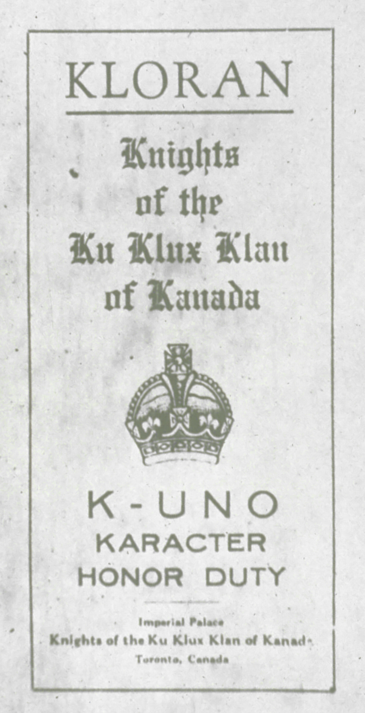

Création du Ku Klux Klan
Le KKK est une organisation suprématiste blanche prenant place au États-Unis et fondé le 24 décembre 1865. Malgré que le KKK ne soit pas un parti politique, il est tout de même classé à l'extrême droite sur l’échiquier politique américain. Le Ku Klux Klan n'a jamais été un parti politique, mais plutôt une organisation de défense des intérêts et des préjugés traditionalistes, racistes et xénophobe. Ils revendiquent une "suprématie blanche". Nathan Bedford Forrest devient le premier Grand Sorcier du KKK, soit le rang le plus élevé au saint de l'organisation
Livre religieux
Le Kloran, qui ne doit pas être confondu avec le Coran, est un portemanteau de "Klan" et de "Koran" et est le livre qui dicte les règles que chaque membre doit suivre et respecter pour faire partie du Klan. La version original a été écrite par William J. Simmons pour la relance des "Knights of the Ku Klux Klan"
Habillement
Les membres du KKK sont vêtus d’une longue robe blanche avec le logo de leur clan sur la poitrine, avec un grand chapeau blanc pointu qui cache leur visage. Il y a 10 rang dans la hiérarchie du clan, seulement les "Klansman", qui est le palier le plus bas, sont dressé de blanc uniquement. Chaque rang a sa couleur qui le distingue. Par exemple, le Grand Wizard, qui est le rang le plus haut, a une robe de couleur pourpre.
La croix en flammes
La pratique de la croix en flammes remonte aux premiers jours du KKK. Le script d'un rituel proscrit par le Kloran décrit les
croisements en flammes comme "l'emblème de ce dévouement sincère et désintéressé de tous les Klansmen au but sacré et aux principes
que nous avons épousés".
Information supplémentaire
À partir de 1867, la participation des Afro-américains à la vie publique dans le Sud est devenue l'un des aspects les plus radicaux de la Reconstruction, alors que les Noirs ont remporté des élections aux gouvernements des États du Sud et même au Congrès des États-Unis. Pour sa part, le Ku Klux Klan s'est consacré à une campagne souterraine de violence contre les dirigeants républicains et les électeurs (noir et blanc) dans le but d'inverser les politiques de reconstruction radicale et de restaurer la suprématie blanche dans le Sud.